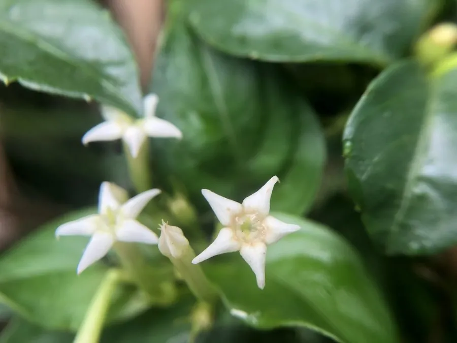

灌木与花木 · 植物界
玉叶金花 Mussaenda pubescens

茜草科玉叶金花属藤状灌木，部分花萼扩大成白色叶片状，衬着金黄色小花，如白玉托金，是南方山野的奇趣植物。
- 分类
- 门被子植物门纲木兰纲目龙胆目科茜草科属玉叶金花属
- 栖息环境
- 海拔 1000 米以下的山坡、溪边与灌丛，喜温暖湿润半阴
- 地理分布
- 中国广东、广西、福建、江西、湖南、云南、贵州、海南等地
- 保护级别
- 暂无评估；未被列入国家重点保护野生植物名录
物种志
玉叶金花为茜草科玉叶金花属藤状灌木，长可达两米，枝条披散，小枝被短柔毛。叶片对生或轮生，卵状披针形，全缘，表面深绿，背面被柔毛。聚伞花序顶生，部分花的花萼裂片扩大成白色、叶片状的苞片，形似玉叶，真正的花冠金黄色、漏斗状，花期四至八月；浆果球形，成熟时黑色，果期九至十一月。
玉叶金花分布于中国广东、广西、福建、江西、湖南、云南、贵州、海南等地，多生于山坡、溪边和灌丛中。它喜温暖湿润和半阴环境，适宜疏松肥沃、排水良好的酸性土壤。白色的扩大萼片并非花瓣，却能吸引传粉昆虫，是植物“以叶代花”的典型例子；全株在民间入药，有清热解毒、凉血消肿之效，广东等地曾用茎叶制凉茶。花期长、形态奇特，也可作庭园攀援观赏植物。
形态与习性
- 株高藤状灌木，长可达 2 m
- 花期4–8 月，花冠金黄色
- 果期9–11 月，浆果黑色
- 光照喜半阴，也耐散射光
- 水分喜湿润，忌积水
- 土壤疏松肥沃的酸性土
- 主要用途庭园观赏，茎叶入药制凉茶
趣味知识
- 玉叶金花的白色“花瓣”其实是扩大的花萼，真正的花冠是金黄色的。
- 这种以白色萼片代替花瓣吸引昆虫的方式，是植物演化中的巧妙策略。
- 广东民间曾用玉叶金花的茎叶熬制凉茶，因此它又有凉口茶之名。